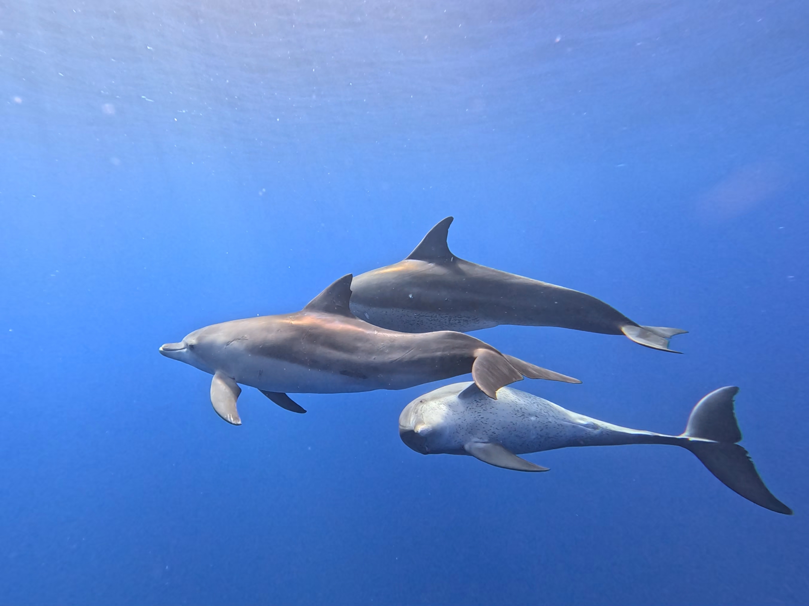

【論文】
【プレプリント】
- Hibiki Nishitani, Tadamichi Morisaka, Kazunobu Kogi, Motoi Yoshioka．2026． Alliance formation and complexity of Indo-Pacific bottlenose dolphins (Tursiops aduncus) around Mikura Island, Japan． bioRxiv． https://doi.org/10.64898/2026.06.12.731994
- Hibiki Nishitani, Tadamichi Morisaka．2026． Methodological inconsistencies hinder comparative studies of alliance in the genus Tursiops． bioRxiv． https://doi.org/10.64898/2026.01.14.699404
【受賞歴】
- The Best Poster Award: The Computational Summer School on Modeling Social and Collective Behavior (COSMOS - Tokyo 2025). 2025/10/3
- 2nd Poster Presentation Award: The 19th International Symposium on Primatology and Wildlife Science. 2024/10/31
【学会・集会発表】
- 西谷響, 北夕紀, 小木万布, 小笠原樹, 青木拓哉, 村山美穂, 森阪匡通．2026. 分割できない資源を巡ってミナミハンドウイルカのオスはどのような個体と協力するのか． 第73回日本生態学会. ポスター発表. 2025年3月11-2025年3月15日.京都大学，日本.
- Hibiki Nishitani, Koki Tsujii, Masanori Shinohara, Tadamichi Morisaka．2025. ．Testing the mechanism and function of cross-species alloparental behaviour between free-ranging Indo-Pacific bottlenose dolphins and spinner dolphins. XXXVIII International Ethological Congress. Poster Presentation. 2025/8/25-2025/8/30．Biswa Bangla Convention Centre，India.
- 西谷響, 辻井浩希, 篠原正典, 森阪匡通．2025．ミナミハンドウイルカとハシナガイルカの仔における異種間同伴に関するメカニズムの検討. 日本セトロジー研究会第35回（豊橋市）・勇魚会2025年度 合同大会. ポスター発表. 2025年6月7日-2025年6月8日．豊橋市自然博物館，日本.
- Hibiki Nishitani, Tadamichi Morisaka, Kazunobu Kogi, Motoi Yoshioka. 2024. Multilevel Alliance Formation of Indo-Pacific Bottlenose dolphin (Tursiops aduncus) Around Mikura Island, Japan. 25th Biennial Conference on the Biology of Marine Mammals. Poster Presentation. 2024/11/11-2024/11/15．，Australia.
- 西谷響, 辻井浩希, 森阪匡通．2024. 小笠原群島に生息するミナミハンドウイルカの社会構造． 第43回日本動物行動学会. ポスター発表. 2024年11月2日～2024年11月4日．帝京科学大学，日本.
- Hibiki Nishitani, Koki Tsujii, Tadamichi Morisaka．2024. Social ageing in male Indo-Pacific bottlenose dolphins: exploring the drivers of shifting sociality． The 19th International Symposium on Primatology and Wildlife Science. Poster Presentation. 2024/10/30～2024/10/31．Kyoto Univesity，Japan.